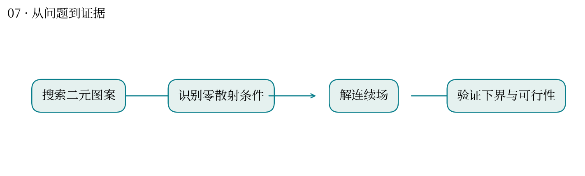
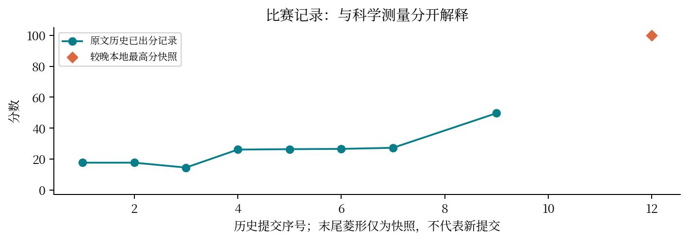

现实中想解决什么：能否通过结构排列，让振动或热能更容易沿指定网络传递？
从计算到应用：网络排列 → 模型中的散射与传输 → 候选振动/热管理结构。
这次实际做到哪一步：本题证明给定模型与约束下散射项可为零，得到目标下界证书。
还缺什么：数学模型的零散射不等于真实材料零热阻。还需真实动力学、损耗、制造偏差和传输测量。
复杂网络搜索，有时可以被一个结构条件直接解决。
最高分快照：100.0 · 2026-10-12T01:11:24+08:00
题目让二元图案与连续处理变量共同调节谐振网络。早期用数值搜索，后期发现能消除模型中散射项的结构。
从谱方法和局部搜索迭代到 W=0 设计；独立证书检查 120 个二元库存、192 个 motif、连续场约束和目标下界。
证书中每个 motif 满足 |q|=3，使所建模的散射项为零；提交目标与证明下界差约 1.91×10⁻¹⁷。较晚成绩快照记录 100 分。
浮点接近下界与精确可行性需要分别证明。公开模型最优也不能替代预算合规、运行环境和过程证据。
类似在基因组算法里先发现图结构或不变量，再缩小搜索空间；比一味增加参数搜索更有价值。
这是公开代理模型内的最优性证据。零散射解可能使原本的复杂鲁棒优化退化，属于值得讨论的题目设计边界，不自动构成评分错误。


| attempt | 提交时间 | 分数 | 状态 |
|---|---|---|---|
| 52051 | 10-11 00:50:47 | 17.6641 | 已出分 |
| 52250 | 10-11 01:33:21 | 17.6641 | 已出分 |
| 53500 | 10-11 09:57:49 | 14.5024 | 已出分 |
| 53819 | 10-11 11:34:40 | 26.1165 | 已出分 |
| 53864 | 10-11 11:51:52 | 26.4011 | 已出分 |
| 53912 | 10-11 12:09:28 | 26.5803 | 已出分 |
| 54074 | 10-11 13:03:59 | 27.2808 | 已出分 |
| 54689 | 10-11 16:30:05 | — | 排队中 |
| 54758 | 10-11 16:52:30 | 49.65 | 已出分 |
| 54787 | 10-11 17:01:14 | — | 排队中 |
| 54994 | 10-11 17:44:25 | — | 排队中 |
源文件 SHA256 见 证据清单；用 scripts/build.py 重建图表。